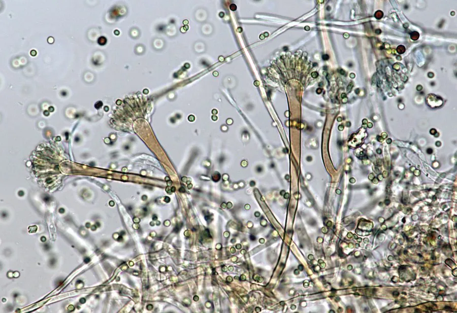

真菌 · 真菌界
构巢曲霉 Aspergillus nidulans

曲霉科丝状真菌，菌落初绿后转褐、形成闭囊壳，是遗传学模式生物，也可引起免疫低下者患曲霉病。
- 分类
- 门子囊菌门纲散囊菌纲目散囊菌目科曲霉科属曲霉属
- 栖息环境
- 土壤、腐植物、室内灰尘与潮湿建材表面
- 地理分布
- 世界性分布，中国各地土壤与室内环境常见
- 保护级别
- 暂无评估；广泛分布
物种志
构巢曲霉的菌落生长较快，初为绿色，产闭囊壳后转为暗褐至紫褐色，表面呈颗粒状。分生孢子梗顶端膨大成顶囊，上生瓶梗与球形分生孢子；有性阶段形成球形闭囊壳，内含子囊与子囊孢子。它可产生真菌毒素如杂色曲霉素。
构巢曲霉广泛存在于土壤、腐烂植物与室内灰尘中，是遗传学与细胞生物学的重要模式真菌，其基因调控、有丝分裂与次生代谢研究曾获诺贝尔奖级成果。它对人通常是条件致病菌：免疫力低下者吸入大量孢子可能引起曲霉病，表现为肺部感染或过敏；同时它产生的杂色曲霉素具有潜在毒性。实验室操作需在生物安全柜中进行，普通人无需恐慌，但应避免在潮湿霉变的室内久留。
形态与习性
- 菌落初绿色，产闭囊壳后转暗褐至紫褐
- 结构分生孢子梗具顶囊，有性阶段形成闭囊壳
- 毒素可产生杂色曲霉素，具潜在毒性
- 生境土壤、腐植物与室内潮湿表面
- 致病性条件致病，免疫低下者可致曲霉病
- 科研价值经典遗传学与细胞周期模式生物
趣味知识
- 构巢曲霉是遗传学研究的明星，基因调控与有丝分裂的许多基本规律先在它身上被阐明。
- 它对健康人基本无害，但免疫低下者吸入大量孢子可能发生肺部曲霉病。
- 它产生的杂色曲霉素是潜在的致癌性真菌毒素，霉变粮食中需检测。
- 实验室培养时它会在菌落上形成褐色闭囊壳，像撒了一层细沙。